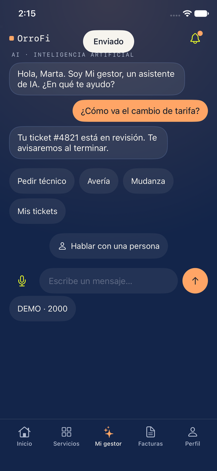
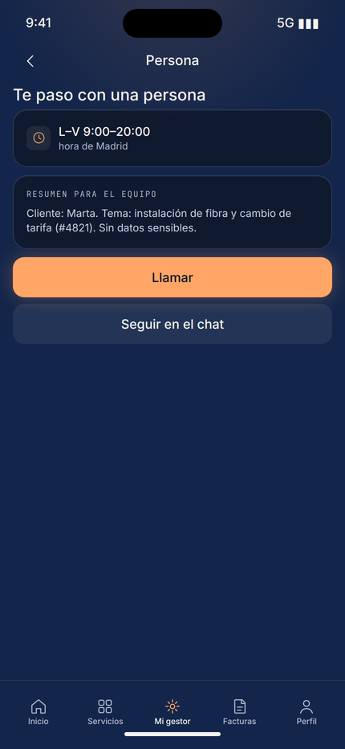

Чат
Помощник сразу представляется, быстрые ответы, «Поговорить с человеком», длинные сообщения приложение сократит.
Помощник сразу говорит, что он искусственный интеллект.

Помощник: короткие ответы, голос, разговор с человеком и заявки.
Помощник сразу представляется, быстрые ответы, «Поговорить с человеком», длинные сообщения приложение сократит.
Помощник сразу говорит, что он искусственный интеллект.

Достигнут лимит сообщения.

Диктовка только на устройстве, с согласием при первом разе.
Микрофон не дан — голосовой ввод скрыт.
Список обращений.

Передача разговора сотруднику.
В рабочие часы по мадридскому времени разговор можно передать человеку.

Честная заявка, когда человек ответит.
Нет тикетов.